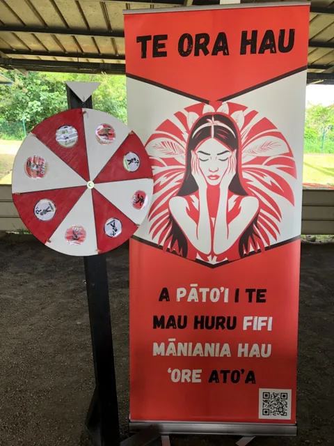
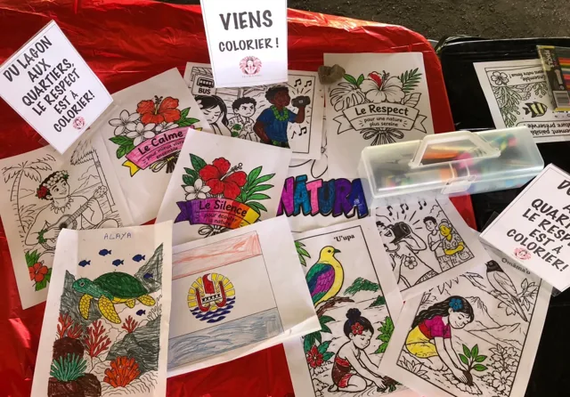
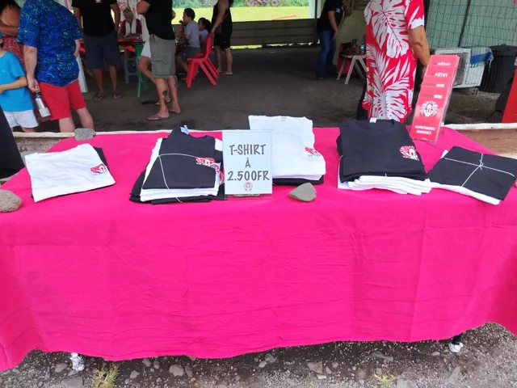
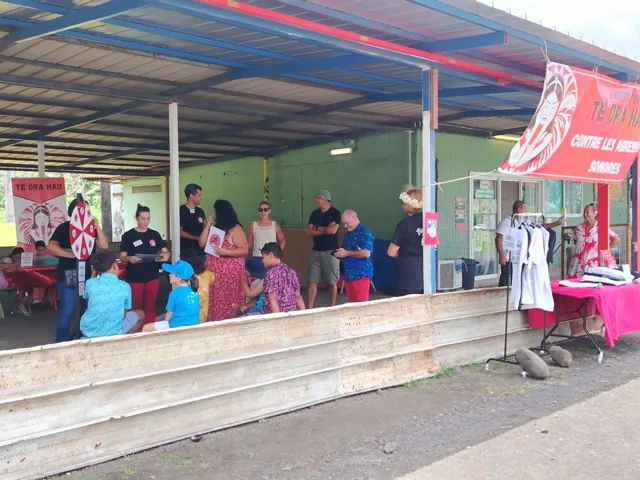
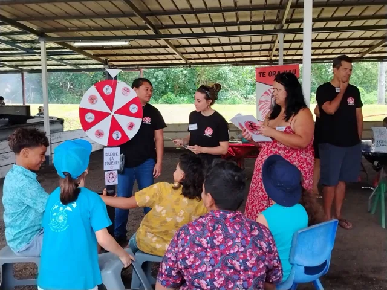
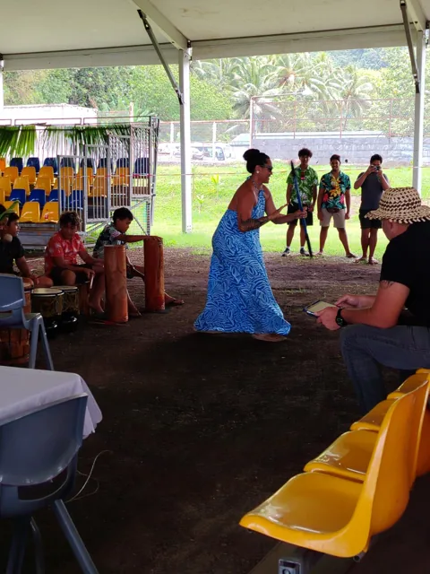
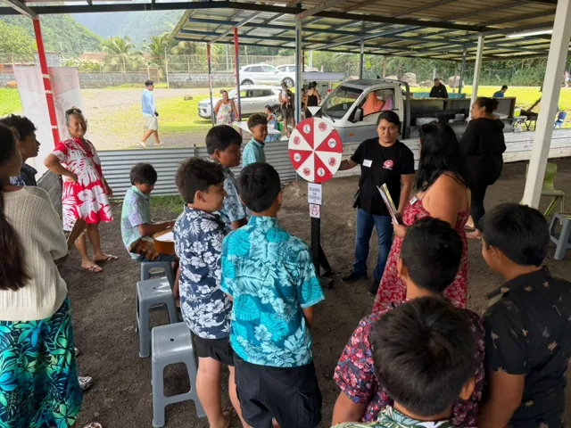

Te Ora Hau au concours ‘Aito ‘Ukulele Pōrīnetia
Ce samedi 14 novembre 2026, l’association Te Ora Hau a eu l’honneur de participer à la deuxième édition du concours ‘Aito ‘Ukulele Pōrīnetia, à Papara.
Une belle occasion de sensibiliser les plus jeunes et les moins jeunes aux nuisances sonores, à travers des ateliers ludiques et instructifs, des échanges et du coloriage pour les petits. Apprendre ensemble, en s’amusant, pour mieux comprendre l’importance du respect de chacun et de notre environnement sonore.
Notre association est également heureuse d’avoir contribué à cet événement par des dons, en soutien à cette rencontre culturelle.
Un grand merci à Tiheni Ena, organisatrice de l’événement, pour son accueil et son engagement en faveur de la culture et de la jeunesse.
Nos remerciements vont également au tāvana de Papara, Mike Teissier, et à toute son équipe, pour leur dévouement à la cause du respect de notre environnement sonore et du bien-vivre ensemble.
Merci à Hina pour la préparation et l’organisation des ateliers, ainsi qu’à toute l’équipe de Te Ora Hau et aux bénévoles pour leur mobilisation et leur énergie.
Mauruuru à toutes celles et ceux qui sont venus partager ce moment avec nous ! Ensemble, faisons vivre notre culture et le respect de notre cadre de vie.
Faites glisser les photos à gauche ou à droite, ou utilisez les flèches. Touchez une photo pour l’agrandir.






